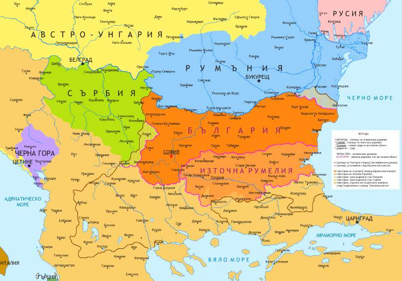

864 - The baptism of the Bulgarians

The baptism of Bulgaria is a process of acceptance and establishment of Christianity as the official state
religion in Bulgaria, which began in 864. The adoption of Christianity has a crucial historical significance
for Bulgaria, because it is associated with the establishment of the Bulgarian Church, the spread of the
Slavic script and the evolution of the state from khanate to kingdom. Since the establishment of the
Bulgarian state in 681, it has been inhabited by two main ethnic groups - Slavs and Proto-Bulgarians,
as well as Byzantines and other tribes with different religious traditions. However, they cannot merge
into one nation, as there are significant differences between them - linguistic, ethnic, cultural, religious,
everyday. Such a merger would only be possible if there was a single religion that imposed common norms and
values. In addition, there are well-known Roman Christians living in the country. Their number is constantly
increasing with the conquest of new territories by Byzantium. This diverse ethno-religious mass creates
problems in society.At the beginning of 864 a spiritual mission headed by a bishop came to Bulgaria, which
dealt with the baptism of the people. For security reasons, Khan Boris I was secretly baptized at night,
accepting the spiritual name of Emperor Michael III. Boris-Mikhail also accepted the Slavic title of
"Grand Duke". Some of the Bulgarian boyars opposed and preserved paganism, but this provoked decisive
actions on the part of Prince Boris to establish Christianity and unite Slavs and proto-Bulgarians in one
Christian nation. Through the adoption of Christianity, Bulgaria affirms its place as a
sovereign state in the European world.